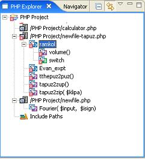
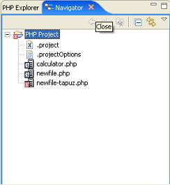
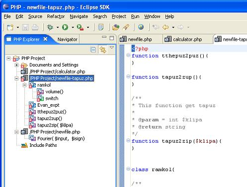
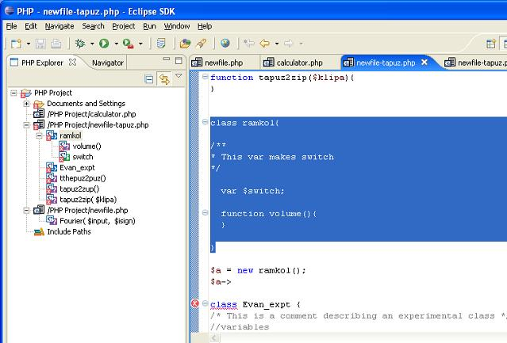
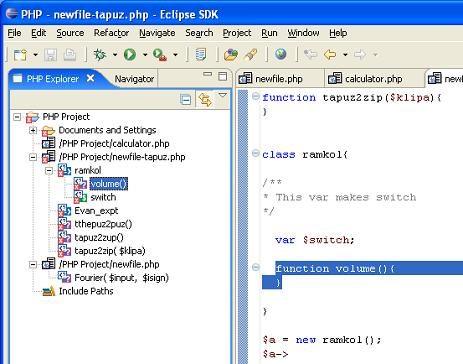

The PHP Explorer view shows the PHP element hierarchy of the PHP projects in the PDT. It provides you with a PHP-specific view of the available resources in the Navigator. The element hierarchy is derived from the project's build paths.
Within each project, source folders and referenced libraries are shown in the tree.
The PHP Explorer view is the main look at your PHP projects and resources.
The PHP Explorer view provides an integrated view of all PHP project resources. In addition, this view specifically shows all PHP code elements (classes, functions, variables, etc.). In addition, clicking an element or declaration will cause the corresponding code to appear in the perspective's editor view.

Figure: - PHP Explorer View
The Navigator view of the same project does not display the unique PHP code elements; it does show the separate files.

Figure: - Navigator View
Go to the PHP Explorer. Double click an element. The editor will display the corresponding code declaration of the selected element.

Figure: - Element’s declaration
In example below we double clicked the class declaration "ramkol". The editor pane displays the corresponding code.

Figure: - Class declaration
In example below we double clicked the function declaration "volume". The editor pane displays the corresponding code.

Figure: - Function declaration